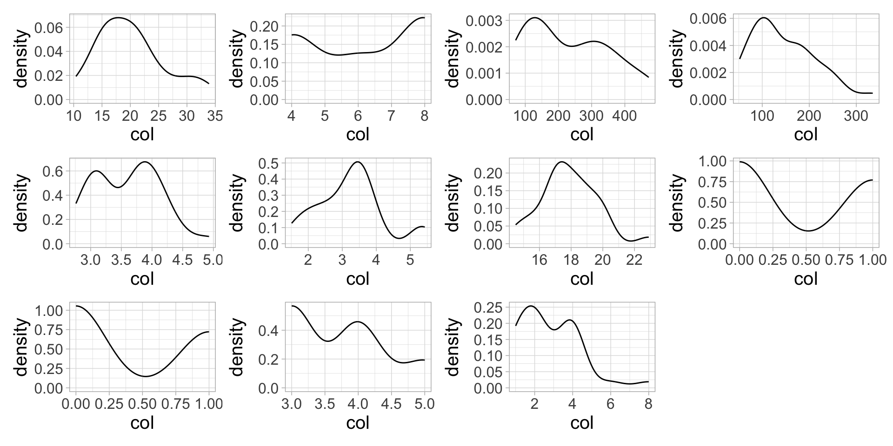
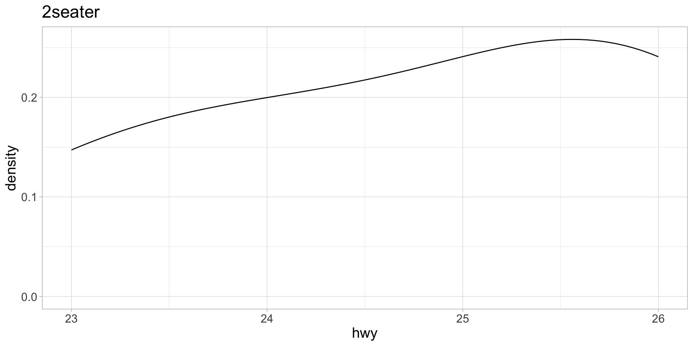

More iteration use cases that can come in handy
ENST/MRNE 222 Environmental Data Analysis and Visualization
Before we begin
Compare your responses to ae-12-iteration to the solutions file, now available on GitHub: https://github.com/MRNE222-sp25-activities/ae-12-iteraton/blob/main/ae-12-iteration_solutions.md
Recall last time…
We used purrr::map() to iteratively read in multiple .csv files:
You can use the map() family of functions to apply any function iteratively over your data
purrr::map() function
Usage:
map(.x, .f, ...)
.x: The input object. Can be:- a vector, in which case the iteration is done over each entry of the vector
- a list, where iteration is done over each element of the list
- a data frame, where the iteration is done over the columns of the data frame
.f: a function that is applied to each element of.x
purrr::map() function

map()executes a function (.f) for each element of your input data (.x)- A list is always returned -
- Since the first argument is always the data (
.x),map()functions work well with piping (|>)
A trivial example to show you how map works
Usage: map(.x, .f, ...)
How to map() columns of a data frame
Usage: map(.x, .f, ...)
The add10() function will be applied to each column.
map() elements of a list
Usage: map(.x, .f, ...)
The add10() function will be applied to each element of the list.
Other map functions are available if you want the output to be something besides a list
Other map functions are available if you want the output to be something besides a list
Map to dataframe:
# A tibble: 4 × 2
old_number new_number
<dbl> <dbl>
1 4 14
2 7 17
3 1 11
4 6 16Recall \(x) is and anonymous function–it does the same thing as function(x)
map() use case: Plot all variables in a dataframe for preliminary exploratory analysis
Plot all variables in mtcars for preliminary exploratory analysis
Have: mtcars dataset
mpg cyl disp hp drat wt qsec vs am gear carb
Mazda RX4 21.0 6 160.0 110 3.90 2.620 16.46 0 1 4 4
Mazda RX4 Wag 21.0 6 160.0 110 3.90 2.875 17.02 0 1 4 4
Datsun 710 22.8 4 108.0 93 3.85 2.320 18.61 1 1 4 1
Hornet 4 Drive 21.4 6 258.0 110 3.08 3.215 19.44 1 0 3 1
Hornet Sportabout 18.7 8 360.0 175 3.15 3.440 17.02 0 0 3 2
Valiant 18.1 6 225.0 105 2.76 3.460 20.22 1 0 3 1
Duster 360 14.3 8 360.0 245 3.21 3.570 15.84 0 0 3 4
Merc 240D 24.4 4 146.7 62 3.69 3.190 20.00 1 0 4 2
Merc 230 22.8 4 140.8 95 3.92 3.150 22.90 1 0 4 2
Merc 280 19.2 6 167.6 123 3.92 3.440 18.30 1 0 4 4
Merc 280C 17.8 6 167.6 123 3.92 3.440 18.90 1 0 4 4
Merc 450SE 16.4 8 275.8 180 3.07 4.070 17.40 0 0 3 3
Merc 450SL 17.3 8 275.8 180 3.07 3.730 17.60 0 0 3 3
Merc 450SLC 15.2 8 275.8 180 3.07 3.780 18.00 0 0 3 3
Cadillac Fleetwood 10.4 8 472.0 205 2.93 5.250 17.98 0 0 3 4
Lincoln Continental 10.4 8 460.0 215 3.00 5.424 17.82 0 0 3 4
Chrysler Imperial 14.7 8 440.0 230 3.23 5.345 17.42 0 0 3 4
Fiat 128 32.4 4 78.7 66 4.08 2.200 19.47 1 1 4 1
Honda Civic 30.4 4 75.7 52 4.93 1.615 18.52 1 1 4 2
Toyota Corolla 33.9 4 71.1 65 4.22 1.835 19.90 1 1 4 1
Toyota Corona 21.5 4 120.1 97 3.70 2.465 20.01 1 0 3 1
Dodge Challenger 15.5 8 318.0 150 2.76 3.520 16.87 0 0 3 2
AMC Javelin 15.2 8 304.0 150 3.15 3.435 17.30 0 0 3 2
Camaro Z28 13.3 8 350.0 245 3.73 3.840 15.41 0 0 3 4
Pontiac Firebird 19.2 8 400.0 175 3.08 3.845 17.05 0 0 3 2
Fiat X1-9 27.3 4 79.0 66 4.08 1.935 18.90 1 1 4 1
Porsche 914-2 26.0 4 120.3 91 4.43 2.140 16.70 0 1 5 2
Lotus Europa 30.4 4 95.1 113 3.77 1.513 16.90 1 1 5 2
Ford Pantera L 15.8 8 351.0 264 4.22 3.170 14.50 0 1 5 4
Ferrari Dino 19.7 6 145.0 175 3.62 2.770 15.50 0 1 5 6
Maserati Bora 15.0 8 301.0 335 3.54 3.570 14.60 0 1 5 8
Volvo 142E 21.4 4 121.0 109 4.11 2.780 18.60 1 1 4 2Want: A density plot for each column (variable) to explore data distributions
map() over columns to iteratively create plots
- If
map()is supplied with a dataframe, it will iterate over each column. - We need to write a function that takes each column (aka variable) as the argument.

Make it more concise with an anonymous function

Use patchwork::wrap_plots() to view all plots in plot_list
The problem is we don’t know what variables are mapped to the x-axes 😩
map2() when you need to use a function that takes two arguments
Use map2() when you need to use a function that takes two arguments
Usage:
map2(.x, .y, .f)
.x,.yA pair of vectors, usually the same length.fA function that is takes.xand.yas arguments

Here, we need a function that takes column (variable) and label (lab) as arguments so we can properly label our x-axes
How do we get a vector of variable names?
- The
names()function takes a data frame as input and outputs a vector of column names. - The column names are the names of the variables we will be plotting!
Use map2() to execute the density_plot2() function
- The
mtcarsdata frame is piped down as the.xargument - Since we are mapping, each column is supplied to our
density_plot2()function as thevariableargument .yis thelabelsvector we created above..fis thedensity_plot2()function.map2takes each element of.xand.yand iteratively applies the plotting function to each.xand.ycombination.
Use map2() to execute the density_plot2() function
Now we have an informative x-axis label!

More map() use cases
Want: using mpg dataset, plot highway mpg vs displacement, with points highlighted for each manufacturer
# A tibble: 234 × 11
manufacturer model displ year cyl trans drv cty hwy fl class
<chr> <chr> <dbl> <int> <int> <chr> <chr> <int> <int> <chr> <chr>
1 audi a4 1.8 1999 4 auto… f 18 29 p comp…
2 audi a4 1.8 1999 4 manu… f 21 29 p comp…
3 audi a4 2 2008 4 manu… f 20 31 p comp…
4 audi a4 2 2008 4 auto… f 21 30 p comp…
5 audi a4 2.8 1999 6 auto… f 16 26 p comp…
6 audi a4 2.8 1999 6 manu… f 18 26 p comp…
7 audi a4 3.1 2008 6 auto… f 18 27 p comp…
8 audi a4 quattro 1.8 1999 4 manu… 4 18 26 p comp…
9 audi a4 quattro 1.8 1999 4 auto… 4 16 25 p comp…
10 audi a4 quattro 2 2008 4 manu… 4 20 28 p comp…
# ℹ 224 more rowsWant: using mpg dataset, plot highway mpg vs displacement, with points highlighted for each manufacturer

We could facet, but with 15 manufacturers the panels are hard to read and we can’t use the gghighlight function

1. Create a function to make a plot for each manufacturer
- The only thing that changes is manufacturer (
mfr) - Remember to “embrace” when you want R to use the value supplied by the
mfrargument and not literallymfr
2. Create vector of manufacturers (makes) to iterate over
distinct() finds unique values of the manufacturer column in the mpg dataset. We need to use the unlist() function to make mfrs a one-dimensional vector.
manufacturer1 manufacturer2 manufacturer3 manufacturer4 manufacturer5
"audi" "chevrolet" "dodge" "ford" "honda"
manufacturer6 manufacturer7 manufacturer8 manufacturer9 manufacturer10
"hyundai" "jeep" "land rover" "lincoln" "mercury"
manufacturer11 manufacturer12 manufacturer13 manufacturer14 manufacturer15
"nissan" "pontiac" "subaru" "toyota" "volkswagen" 3. Use map() to execute the function iteratively over each manufacturer. Assign the output to a list called plot_list.

We can also split a data frame into a list by a grouping variable using group_split() and apply a function to each element of the list.
Here, let’s create a density plot of highway mileage for each class of cars in the mpg dataset
# A tibble: 234 × 11
manufacturer model displ year cyl trans drv cty hwy fl class
<chr> <chr> <dbl> <int> <int> <chr> <chr> <int> <int> <chr> <chr>
1 audi a4 1.8 1999 4 auto… f 18 29 p comp…
2 audi a4 1.8 1999 4 manu… f 21 29 p comp…
3 audi a4 2 2008 4 manu… f 20 31 p comp…
4 audi a4 2 2008 4 auto… f 21 30 p comp…
5 audi a4 2.8 1999 6 auto… f 16 26 p comp…
6 audi a4 2.8 1999 6 manu… f 18 26 p comp…
7 audi a4 3.1 2008 6 auto… f 18 27 p comp…
8 audi a4 quattro 1.8 1999 4 manu… 4 18 26 p comp…
9 audi a4 quattro 1.8 1999 4 auto… 4 16 25 p comp…
10 audi a4 quattro 2 2008 4 manu… 4 20 28 p comp…
# ℹ 224 more rows1. Split mpg into a list of data frames
Each data frame in the list represents a different class
# A tibble: 5 × 11
manufacturer model displ year cyl trans drv cty hwy fl class
<chr> <chr> <dbl> <int> <int> <chr> <chr> <int> <int> <chr> <chr>
1 chevrolet corvette 5.7 1999 8 manual(… r 16 26 p 2sea…
2 chevrolet corvette 5.7 1999 8 auto(l4) r 15 23 p 2sea…
3 chevrolet corvette 6.2 2008 8 manual(… r 16 26 p 2sea…
4 chevrolet corvette 6.2 2008 8 auto(s6) r 15 25 p 2sea…
5 chevrolet corvette 7 2008 8 manual(… r 15 24 p 2sea…2. Write a function that takes a data frame as the argument
- To get class labels, use
unique()function. - The data frames are grouped by class, so each data frame in
data_listwill only have 1 unique class value.
3. map() the function over each data frame in data_list
Make it more efficient with an anonymous function
Check to make sure it worked

map() wrapup
Think carefully about what you want to do:
- What element(s) of your data do you want to iterate over?
- Make sure the function you write takes this element as an argument
- The output of
map()is a list, but other map functions have different outputs
There are many other use cases for
map()functions!- Any time you find yourself copying and pasting the same code, write a function
- If you are still copying and pasting the code to execute your function, you can probably
map()it to automate the execution